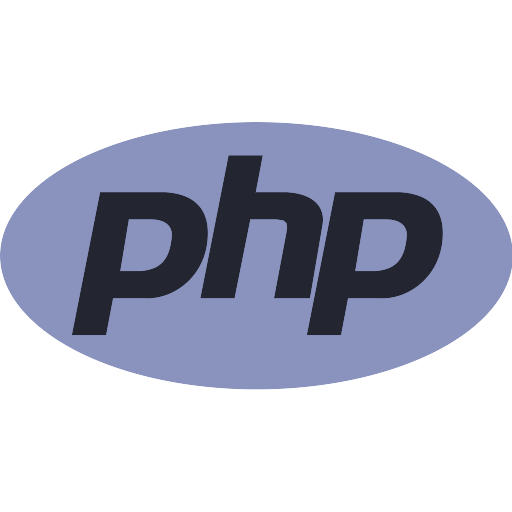
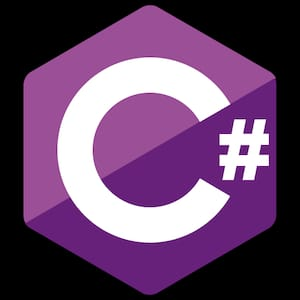

<!DOCTYPE html>
<head>
    <title>This is a TT</title>
    <meta name="viewport" content="width=device-width, initial-scale=2">
    <link rel="stylesheet" href="style.css">
    <script type = "text/javascript">  
      function fun() {  

        
         alert ("This is an alert dialog box");  
      }  
</head>
<body style="background-color:white;">
    <h1>The Best Web Development Roadmap</h1>
    <p>Here we will learn about different<br>programming Languages used by the Web Developers</p>
    <h2>Here we have to discuss about Frontend Languages</h2>
   <div class="Class1">
    <h1 style="font-family:'Lucida Sans', 'Lucida Sans Regular', 'Lucida Grande', 'Lucida Sans Unicode', Geneva, Verdana, sans-serif,sans-serif;">1.HTML</h1>
    
<p>HTML lays the foundation for creatting web pages. You can use the technology to <br>create personalized websites with unique (and advanced) features and functions. For<br> the uninitiated, HTML5 is the most recent version, and you should start learning<br> it right away.</p>
</div>
<div>
    <h1 style="font-family: 'Lucida Sans', 'Lucida Sans Regular', 'Lucida Grande', 'Lucida Sans Unicode', Geneva, Verdana, sans-serif">2.CSS</h1>
    
    <p style="font-size:medium">CSS (Cascading Style Sheet), on the other hand, is a must-have in Web development, as we previously stated. We utilize it to give our website a unique look, including the layout and design. We also utilize it to ensure that our website looks good on a variety of devices and screen sizes.
    </p>
</div>
<div>
    <h1 style="font-family: Lucida;">3.JavaScript</h1>
    
    <p>JavaScript is a text-based programming language that allows you to construct interactive web pages on both the client and server sides. Whereas HTML and CSS<br> provide structure and layout to web pages, JavaScript adds interactive components<br> that keep users engaged.<br>
   Developers can also use JS to create dynamic websites with particular features<br> (manipulate elements, algorithmic thinking, and so on) that help build an engaging<br> network on a digital platform. If you want to be a web developer, you can’t afford to<br> skip JavaScript</p>
</div>
<div>
    <h1>Now Lets know about what is Backend Webdevelopment</h1>
    <h2>Backend Webdevelopment is the experts who build and maintain<br> mechanisms that process data and perform actions on websites.like front-end developers, who control<br> everything you can see on a website, back-end developers are involved in data storage,<br> security, and other server-side functions that you cannot see.</h2>
</div>
<div>
    <h1 style="font-family: 'Lucida Sans', 'Lucida Sans Regular', 'Lucida Grande', 'Lucida Sans Unicode', Geneva, Verdana, sans-serif">1.JavaScript</h1>
    
    <p>Whenever there is a talk of web development – most probably, 9 out of 10 times the name of JavaScript comes in the discussion. As per the annual reports of various popular platforms like Stack Overflow and Octoverse – JavaScript is one of the most preferred and leading programming languages in the tech world. One of the major reasons behind it is that the particular language can be used for both – Front End Web Development and Back End Web Development. Looking at several past trends and stats, it can be said that the popularity of Node.js has somehow increased the usage of JavaScript as a backend language for web development. Meanwhile, the language provides you with several remarkable features for backend development such as Light-weight Scripting language, Dynamic Typing, Interpreted, Object-Oriented programming support, Client-Side Validation, Huge community support, and many more.</p>
     <p style="font-size:large;"><b>JavaScript Frameworks for Backend Web Development: Next.js, Express, MeteorJS, etc.</b></p>
</div>
<div>
    <h1>2.Python</h1>
    
    <p>Though Python is quite famous among individuals for its compatibility with advanced technologies like Machine Learning, Internet of Things (IoT), Data Science, etc. – let us tell you that this enriching programming language is widely used and very much suitable for backend web development also. Even one of the leading IT giants of the current times Google significantly relies on Python, and it is one of the 3 primary languages used by Google (the other two are Java and C++). One of the major advantages of using Python for web development is its huge collection of standard libraries that make the work of developers comparatively easier and efficient. The additional prominent and unique features of Python such as better code readability. easier integration with other languages, GUI Programming support, portability, and numerous others makes it a more preferred language among web developers.</p>
     <p style="font-size:large;"><b>Python Frameworks for Backend Web Development: Django, Flask, Pyramid, etc.</b></p>
</div>
        <p>
          <h1>3.PHP</h1>
          
          <p>HP (or you can say Hypertext Preprocessor) is a veteran player in the web development world. This open-source server-side scripting language is created in 1994 and is specifically used for web development. As it is an interpreted language – it doesn’t require a compiler either and also it can run on almost every major operating system like Windows, Linux, macOS, Unix, etc. Talking about the enriching features of PHP, there are so many such as easy to learn nature, cross-platform compatibility, OOPs features, support to various standard databases like MySQL, SQLite, etc. huge community support, and many others. Other than that, PHP is very much secure as a server-side scripting language as there are numerous hash functions available in PHP for the encryption of user’s data. In particular, if you’re a beginner – you can opt to go with PHP for backend web development5.</p>
          <p style="font-size:large;"><b>PHP Frameworks for Backend Web Development: Laravel, CodeIgniter, Symfony, etc.</b></p>
        </div>
        <div>
            <h1>4.Java</h1>
            
            <p>Java is another exemplary programming language for backend web development. The object-oriented programming language is widely used for developing enterprise-scale web applications along with the development of android applications, desktop applications, scientific applications, etc. The primary advantage of using Java is that it works on the Write Once Run Anywhere principle i.e, the compiled Java code can be executed on any platform that supports Java without the need for recompilation. In more specific terms, the Java code is first compiled into byte code which is machine-independent and then this byte code runs on the JVM regardless of the underlying architecture. Besides, Java supports multithreading that allows the concurrent execution of two or more threads for maximum utilization of CPU. Other additional features of Java are – platform-independent, follows the OOP concepts, rich open-source libraries, automatic memory allocation & garbage collection, portability, etc.</p>
            <p style="font-size: larger;"><b>Java Frameworks for Backend Web Development: Spring, Struts, Grails</b></p>
        </div>
          <div>
            <h1>5.Ruby</h1>
            
            <p>Ruby is a general-purpose, interpreted programming language that supports various programming paradigms such as procedural, functional, and object-oriented programming. The language is being widely used for web development across the world and is very much recommended to beginners for getting started with backend web development as it is comparatively easier to learn. Alike Python, Ruby also focuses on increasing the developers’ productivity that eventually fastens the web development process. The particular language supports almost every major platform such as Windows, Mac, and Linux, and let us tell you this as well that Ruby is highly based on many other programming languages like Perl, Lisp, Eiffel, Ada, etc. Dynamic typing and Duck typing, Automatic garbage collection, Large standard library, Custom dispatch behavior, Flexibility & Scalability, Centralized package management through RubyGems, etc. are some of the prominent features that come up with Ruby.</p>
            <p><b>Ruby Frameworks for Backend Web Development: Ruby on Rails, Sinatra, Grape, etc.</b></p>
        </div>
        <div>
            <h1>6.Golang</h1>
            
            <p>If you’re thinking that Go is not that popular among the developers then let us tell you as per last year’s report of Stack Overflow – it was one of the top 5 most loved programming languages by developers across the world. Go is a statically typed programming language that is designed at Google and having syntax quite similar to C language. The language allows the developers to build scalable and secure web applications more efficiently. One of the major advantages of using Go is that it provides excellent support for multithreading and also, it has the garbage collection feature for automatic memory management. Some of the other considerable features of Go language are – easy to learn, readable code, backed by Google, compiled language, package management, powerful standard library, concurrency support, high-performance, and many more.</p>
           <p><b>Go Frameworks for Backend Web Development: beego, echo, revel, etc.</b></p>
        </div>
          <div>
            <h1>7.C#</h1>
            
            <p>C# is one of those few languages that is constantly ranking under the top 5 programming languages at various standard indices for the last few years. Though, you need to know that this general-purpose language was initially developed by Microsoft primarily for the .Net framework. Alongside, backend web development, now C# is extensively being used in multiple areas such as the development of Windows applications, game development, etc. The language provides you with various enriching features such as faster compilation, interoperability, scalable & updatable, component-oriented & structured language, and many others. In addition, C# comes up with a rich set of libraries that helps the developers for a faster and efficient development process. Hence, if you’re in a search of a programming language for a backend web developer – you can give it a try to C# as well.</p>
            <p><b>C# Frameworks for Backend Web Development: .NET</b></p>
          </div>    
          <div>
            <h1>So, we have mentioned the most recommended and worthwhile programming languages for backend web development that you can consider learning. However, let us remind you again that before picking out any particular language from the above-mentioned ones, you need to consider various individual aspects also like your goals, project requirements, learning curve, etc.</h1>
          </div>
    </body>